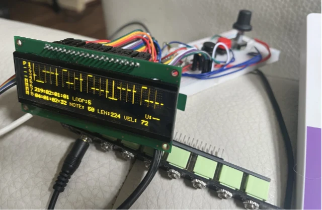
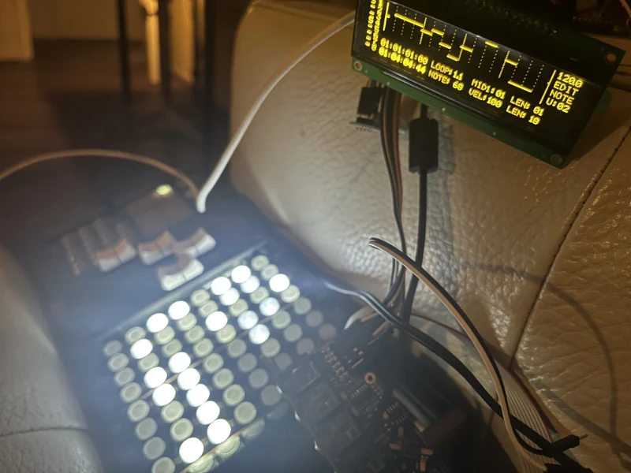

Hardware requirements
| Part | What to fit or connect |
|---|---|
| Teensy and memory | Teensy 4.1 with 8 MB of external PSRAM. If fitting a single PSRAM chip, use the smaller QSPI footprint on the underside of the board. Teensy 4.1 memory and pinout |
| Display | 256 × 64 OLED with the SSD1322 controller, set up for four-wire SPI. It shows the piano roll, track and slot, transport, tempo and save status. |
| Storage | Use the onboard microSD socket for autosave and your set library. Allow about 2 GiB of free space for the two files together. Insert the card before powering up. |
| Controls | The base module has a push encoder and four momentary buttons. The encoder edits notes and groove settings. For record, overdub and transport on this firmware, use a MIDI controller. The reference DROID setup has a button grid and four motorized faders. |
| MIDI connections | A USB data cable connects the Teensy to a computer. A USB MIDI controller connects to the separate five-pin USB host header using a host cable. For five-pin DIN instruments, fit the MIDI IN and OUT circuits below. |
Connect a keyboard, controller and synth
- Power up. The firmware covered by this manual displays OSTINATIX v0.7 at startup.
- Connect the MIDI input and output. Connect your keyboard’s MIDI OUT to the looper’s DIN IN, or plug a compatible USB MIDI keyboard into the Teensy’s USB host port. A computer can also send MIDI to the Teensy over USB. Connect the looper’s DIN OUT to your synth’s MIDI IN. For a software instrument, route the Teensy’s USB MIDI output to an instrument track in your DAW.
- Set the MIDI channels. Start with your keyboard transmitting on channel 1 and your synth receiving on channel 1. Use a separate controller or a pad bank on channel 16 for looper controls. The DROID patch maps the controls for you. On another controller, set the pads to send a MIDI note when pressed and release it when lifted.
- Check MIDI thru. Select track 1 and play a key. You should hear the receiving instrument through its audio output. The looper sends playback notes to DIN OUT and to the computer over USB. The Teensy’s USB host port sends MIDI feedback for controller LEDs and motorized faders.
Map the pads and faders or download the DROID patch →
Wire the five-pin MIDI input and output
The looper’s DIN IN and OUT use Serial8 at 31,250 baud. For one pair of five-pin DIN sockets, use a 6N138 optocoupler, a 1N4148 diode, a 0.1 µF bypass capacitor and the resistors listed below. Identify the numbered terminals on each socket before soldering. Its solder side is the mirror image of its mating face.
| Connection | Wire to |
|---|---|
| DIN IN, pin 4 | Through 220 Ω to the 6N138 input, pin 2. |
| DIN IN, pin 5 | Directly to 6N138 pin 3. Connect the 1N4148 across pins 2 and 3, with the banded end (cathode) on pin 2. Leave DIN IN pins 1, 2 and 3 open to preserve isolation. |
| 6N138 power | Pin 8 to 5 V and pin 5 to Teensy GND. Put the 0.1 µF capacitor across pins 8 and 5. Leave 6N138 pins 1, 4 and 7 open. |
| Teensy MIDI receive | Connect 6N138 pin 6 directly to Teensy RX8 (pin 34). Add a 470 Ω pull-up from that junction to 3.3 V. |
| DIN OUT, pins 4 and 5 | Connect 3.3 V through 47 Ω to DIN OUT pin 4. Connect Teensy TX8 (pin 35) through a second 47 Ω resistor to DIN OUT pin 5. |
| DIN OUT, pin 2 | Connect to Teensy GND. Leave DIN OUT pins 1 and 3 open. |
These connections follow PJRC’s Teensy 4.x MIDI circuit with the looper’s RX8 and TX8 pins. Original circuit schematic · MIDI wiring and DIN connector pinout.

Optional eight-port setup. With an external 8-in/8-out MIDI interface on a computer, your DAW can route the interface inputs to the looper over USB and send the looper’s eight playback channels to individual interface outputs. A standalone Teensy expansion would need separate DIN circuits, pin assignments and firmware routing for the additional serial ports. The current build drives one onboard DIN pair. Firmware port setup.
Connect the display, encoder and buttons


| Control or signal | Teensy 4.1 connection |
|---|---|
| OLED data and clock | MOSI (display data in) → pin 11. SCK (serial clock) → pin 13. |
| OLED control lines | Chip select (CS) → 10. Data/command (DC) → 9. Reset → 8. Use the supply voltage specified for your display module and connect its ground to the Teensy’s ground. |
| Rotary encoder knob | Quadrature outputs A → 29 and B → 30. Connect its common contact to ground. Connect the push switch between pin 31 and ground. The firmware uses the internal pull-up. |
| Base-module buttons | The reference panel wires A, B, C and D to pins 36, 37, 38 and 39 respectively. Their performance actions are currently available over MIDI. Base-module pin assignments. |
| External knobs and faders | The DROID faders send MIDI. A different controller can use knobs or faders that send the same CC or Pitch Bend messages. Connect these through the controller’s MIDI port. Fader assignments. |
Check the pins against the firmware and your board while wiring. OLED signal pins · Encoder wiring · Teensy pinout cards.
Choose the timing source
For a first take, turn off the DAW or sequencer’s MIDI Clock output. Press PLAY/STOP to start playback with the looper’s internal clock. In LOOP_EDIT, F4 sets the tempo in whole beats per minute and F3 adjusts it in tenths. The looper uses 192 ticks per quarter note.
To sync with a DAW or sequencer, enable MIDI Clock on its output to the looper. MIDI Clock sends 24 pulses per quarter note. The looper divides each pulse interval into eight internal ticks to follow the incoming tempo. MIDI Start, Continue and Stop control the transport. The clock icon brightens and shows an incoming arrow.
Some sequencers keep sending clock pulses while stopped. In that case, tap the looper’s global PLAY/STOP to start on the next pulse. If the sequencer is already playing, the same button stops the looper’s tracks locally. Press it again to rejoin at the next bar. Set the tempo on the device sending MIDI Clock.
Prepare the card for your first take
Insert the microSD card before powering up. A new card starts in read-only mode, shown as RO. With the transport stopped and recording finished, open the Teensy’s USB serial monitor at 115200 baud. Type this command and press Return.
!ENGINE approve-savingThe looper remembers this setting on the card. After recording, the four save dots flash bright when the changes have been written. See Save & load sets to keep a named stage of the arrangement.
Identify the firmware build
To compile the firmware described here, run pio run -e teensy41-engine from the repository root. The separate teensy41-capture-serial environment builds the legacy looper, which has different controls and a different save format. A CR2032 on VBAT and GND keeps the clock running between sessions so saved sets keep their dates. If the display says TIME NOT SET, check the clock with !ENGINE time.